The kit, tried end to end
ARTIE on a coworker's own GitHub, with nothing to install but Docker, seen in each system it worked in: GitHub itself, GitHub through the HEART gateway, and a build and a deploy service, each answering a browser in HTML with the acts it offers now. Every run and screenshot here was live, on JogoShugh/heart-github-test, standing in for a fork.
How your coworker runs it
- Fork and clone this repository; turn on the fork's issues. A fine-grained token for the fork: Contents, Issues and Pull requests, read and write. An Anthropic key for the walks.
kit/try.sh upkeeps the systems running, so the build and deploy services keep their state between commands, and each answers a browser onlocalhost.kit/bootstrap.shopens six issues in the fork, from a kept script, with no model.kit/try.sh walk NAME,keep NAME,replay NAME. Each run writes its trace and a report of every request and answer in./work/runs.
Screenshots of the HEART services were taken in Chrome with each one's credential added to its requests: GitHub's token for the gateway, the test tokens for the build and deploy services. A browser sign-in for them is still to choose.
Seeded: six issues in the fork
kit/bootstrap.sh replays a kept script, with no model: three issues waiting for triage, three ready to close.

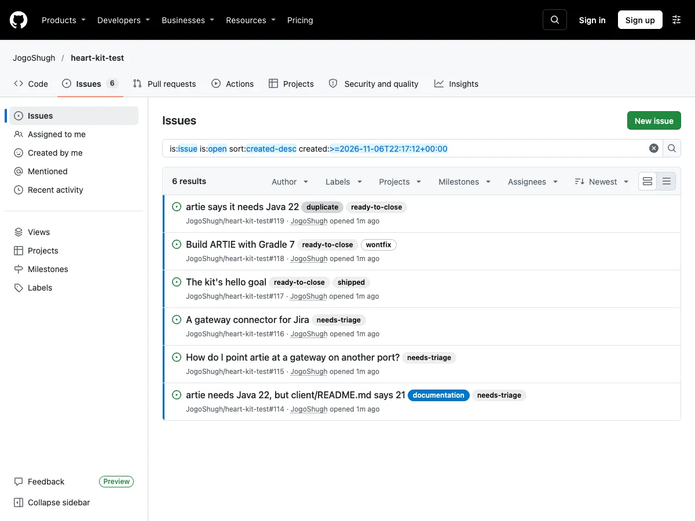

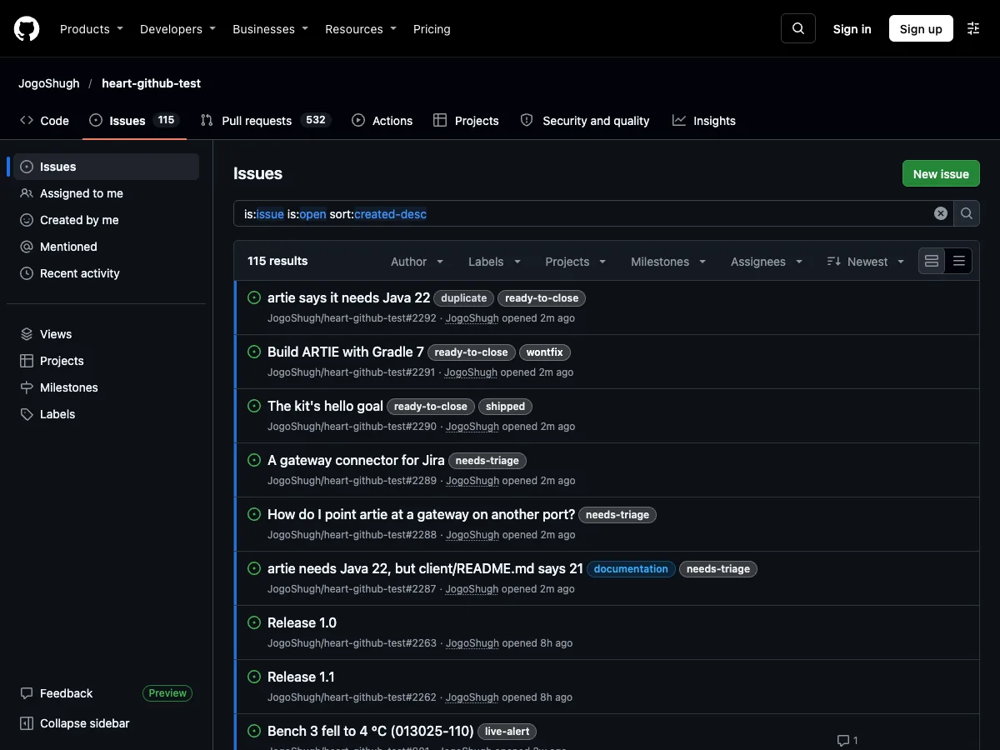

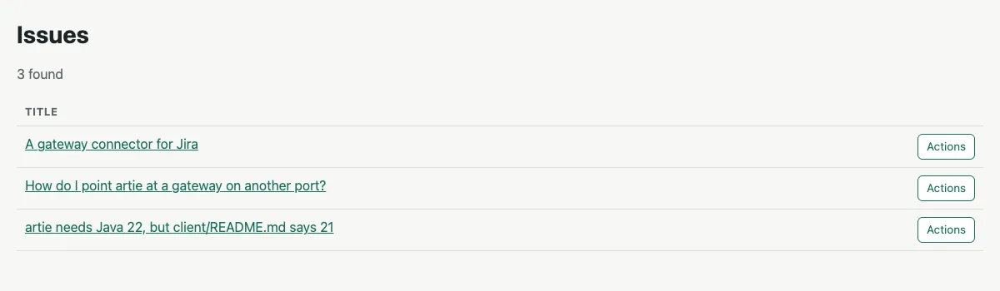

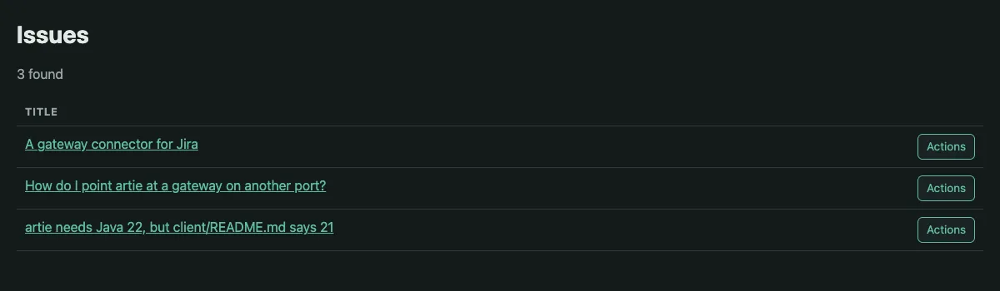

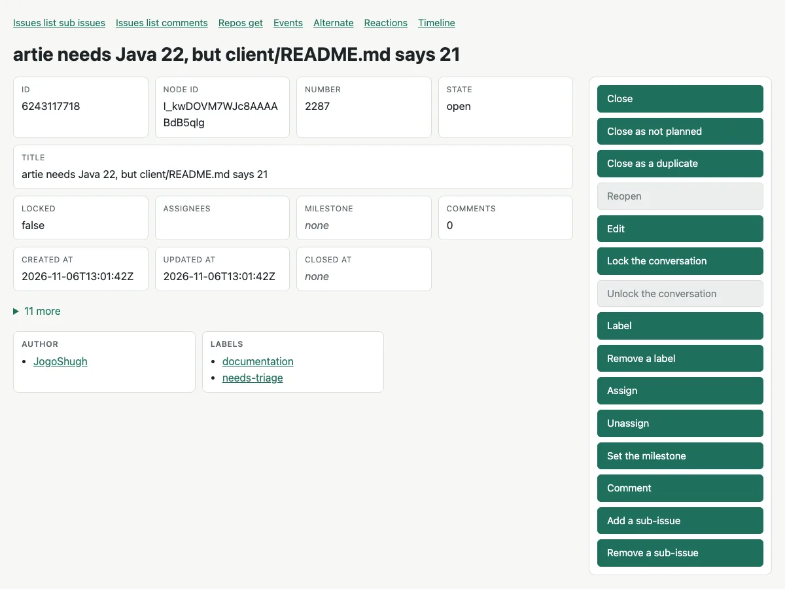

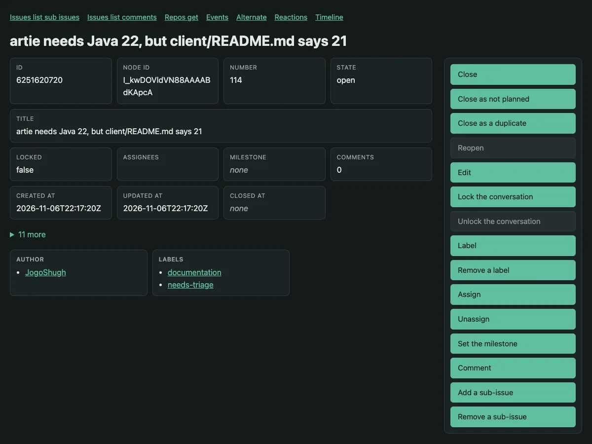

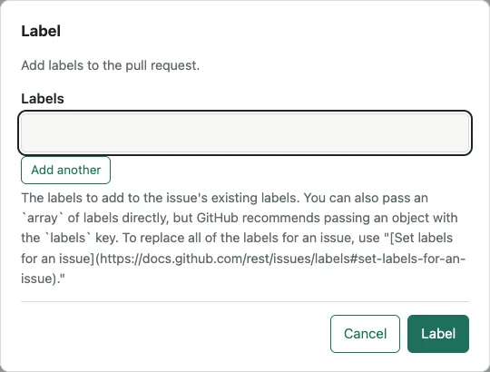

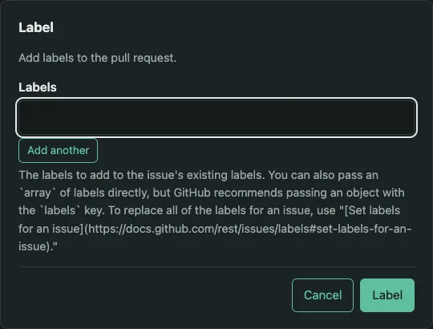
seed.heart.yaml, the kept script the bootstrap runs
# Generated by artie generate from runs/seed.trace.yaml, the run of seed.goal.md.
# Every selection as that run made it, nested as it nested, with no model.
# What it was offered is pinned in seed.pins.yaml, held to before every act.
# artie run seed.heart.yaml owner=JogoShugh repo=heart-github-test
heart: 1
kind: kept
start: https://localhost:8393/
inputs:
owner:
question: Whose repository?
repo:
question: Which repository?
steps:
- act: github:repos-get
fields:
owner: ${owner}
repo: ${repo}
inferred: get repository ${owner}/${repo}
from-intent: In ${owner}/${repo}
then:
- act: github:open-issue
fields:
title: artie needs Java 22, but client/README.md says 21
body: "Built and run as the README says, artie stops: it needs Java 22 or newer."
labels:
- needs-triage
- documentation
intent: "Open an issue titled \"artie needs Java 22, but client/README.md says 21\", saying \"Built and run as the README says, artie stops: it needs Java 22 or newer.\", labelled needs-triage and documentation"
then: []
- act: github:open-issue
fields:
title: How do I point artie at a gateway on another port?
body: The goals start at http://localhost:8392/. Mine runs elsewhere.
labels:
- needs-triage
intent: Open an issue titled "How do I point artie at a gateway on another port?", saying "The goals start at http://localhost:8392/. Mine runs elsewhere.", labelled needs-triage
then: []
- act: github:open-issue
fields:
title: A gateway connector for Jira
body: The gateway reads any OpenAPI description. A connector for Jira Cloud would let one goal work across GitHub and Jira.
labels:
- needs-triage
intent: Open an issue titled "A gateway connector for Jira", saying "The gateway reads any OpenAPI description. A connector for Jira Cloud would let one goal work across GitHub and Jira.", labelled needs-triage
then: []
- act: github:open-issue
fields:
title: The kit's hello goal
body: A first goal that opens, comments on and closes one issue.
labels:
- ready-to-close
- shipped
intent: Open an issue titled "The kit's hello goal", saying "A first goal that opens, comments on and closes one issue.", labelled ready-to-close and shipped
then: []
- act: github:open-issue
fields:
title: Build ARTIE with Gradle 7
body: The build needs Gradle 8.
labels:
- ready-to-close
- wontfix
intent: Open an issue titled "Build ARTIE with Gradle 7", saying "The build needs Gradle 8.", labelled ready-to-close and wontfix
then: []
- act: github:open-issue
fields:
title: artie says it needs Java 22
body: Same as the README issue about Java 22.
labels:
- ready-to-close
- duplicate
intent: Open an issue titled "artie says it needs Java 22", saying "Same as the README issue about Java 22.", labelled ready-to-close and duplicate
then: []
hello: open, comment, close
Claude walks the goal once; artie keeps the walk as YAML; the kept script runs again with no model.

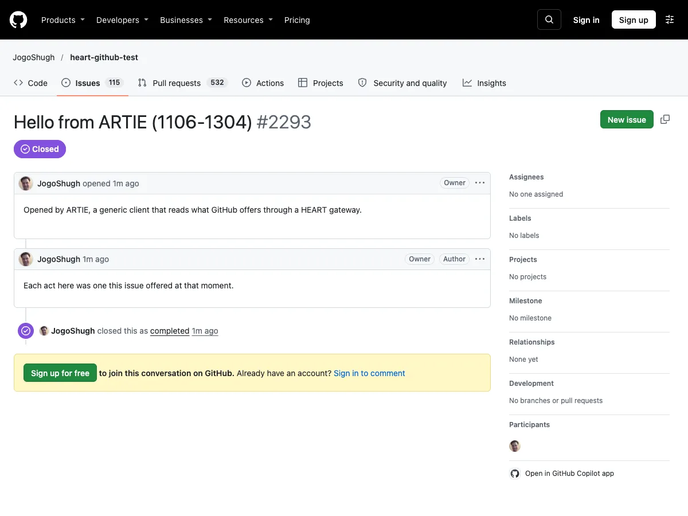

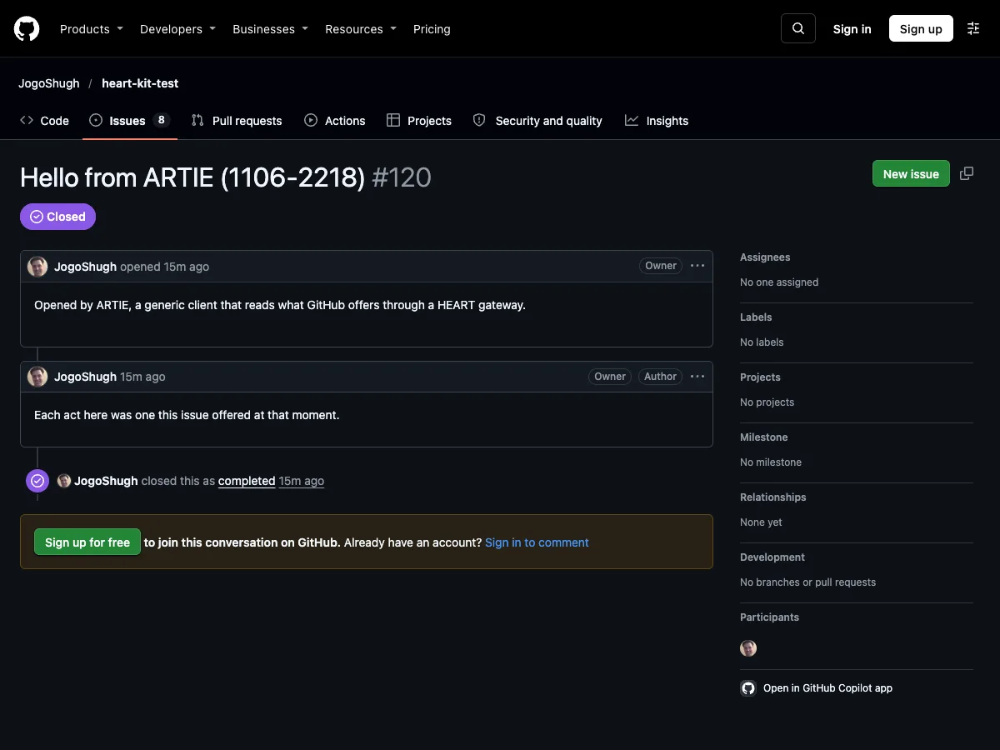

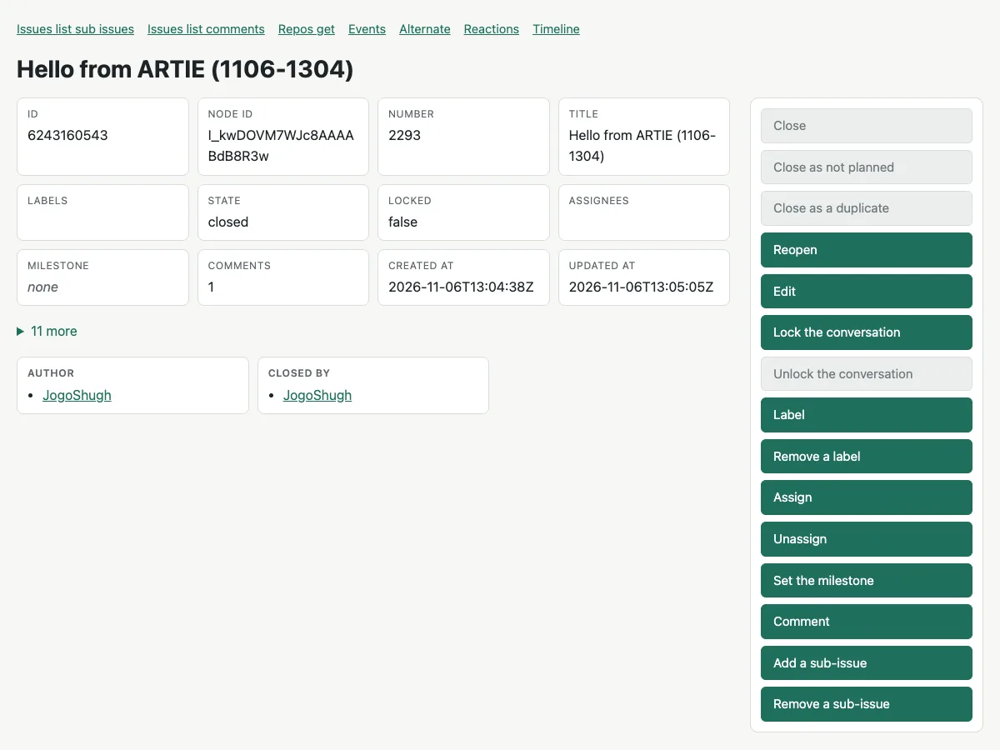

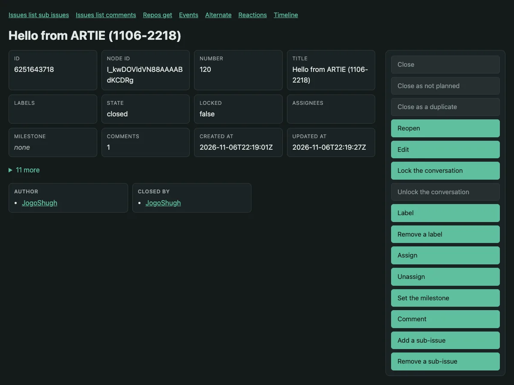
- Walk: 49 s; 11 planner decisions, 5 reasoner choices.
- Replay: 13 s, no model, held strictly to the lock file: #2294.
http://localhost:8392/repos/JogoShugh/heart-github-test/actions/open-issueRequest body
Answer body
http://localhost:8392/repos/JogoShugh/heart-github-test/issues/2293/actions/commentRequest body
Answer body
http://localhost:8392/repos/JogoShugh/heart-github-test/issues/2293/actions/closeRequest body
Answer body
hello.heart.yaml, kept from the walk
# Generated by artie generate from runs/hello.trace.yaml, the run of hello.goal.md.
# Every selection as that run made it, nested as it nested, with no model.
# What it was offered is pinned in hello.pins.yaml, held to before every act.
# artie run hello.heart.yaml owner=JogoShugh repo=heart-github-test
heart: 1
kind: kept
start: http://localhost:8392/
inputs:
owner:
question: Whose repository?
repo:
question: Which repository?
stamp:
default:
now: MMdd-HHmm
steps:
- act: github:repos-get
fields:
owner: ${owner}
repo: ${repo}
inferred: get repository ${owner}/${repo}
from-intent: In ${owner}/${repo}
then:
- act: github:open-issue
fields:
title: Hello from ARTIE (${stamp})
body: Opened by ARTIE, a generic client that reads what GitHub offers through a HEART gateway.
intent: Open an issue titled "Hello from ARTIE (${stamp})", saying "Opened by ARTIE, a generic client that reads what GitHub offers through a HEART gateway."
then:
- keep-as: issue
- act: github:issues-get
fields:
owner: ${owner}
repo: ${repo}
issue_number: ${issue.number}
inferred: get issue ${issue.number} in ${owner}/${repo}
from-intent: On {issue}
then:
- act: github:comment
fields:
body: Each act here was one this issue offered at that moment.
intent: Comment "Each act here was one this issue offered at that moment."
then: []
- act: github:close
intent: Close it as completed
then: []
- check:
- field: state
is: closed
- field: state_reason
is: completed
Every step, with every request and answer: the walk · the replay
triage: a label from each issue's own words
A watch over issues with needs-triage among their labels. Claude picks bug, question or enhancement from each issue's words; then triaged.

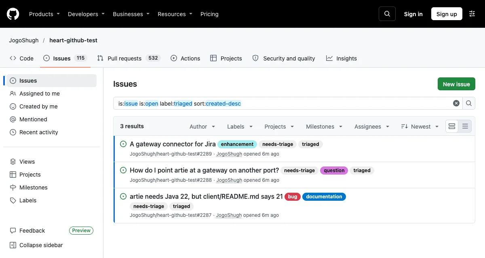

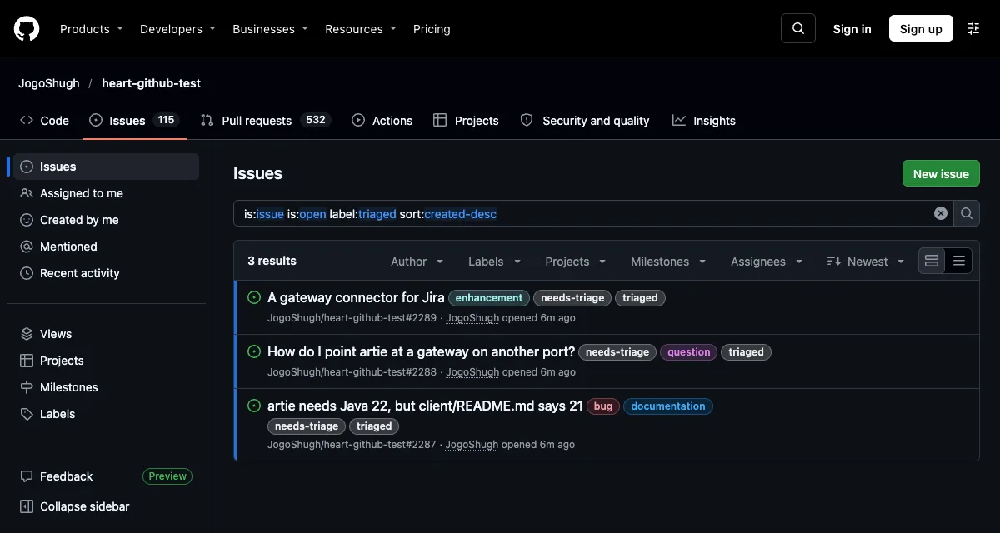

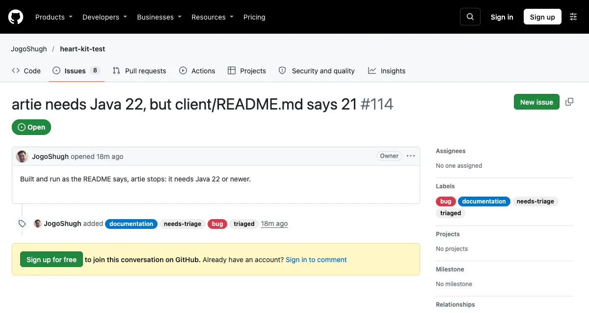

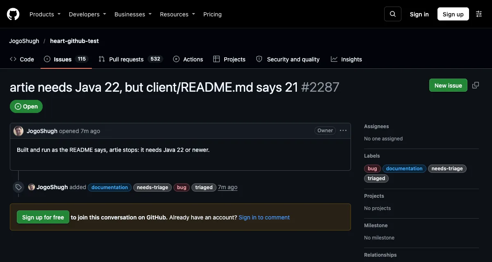

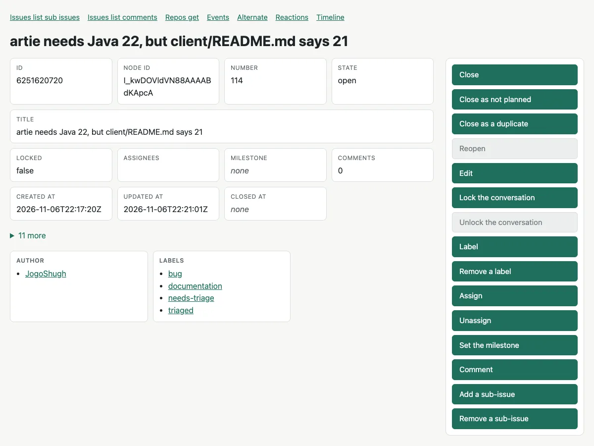

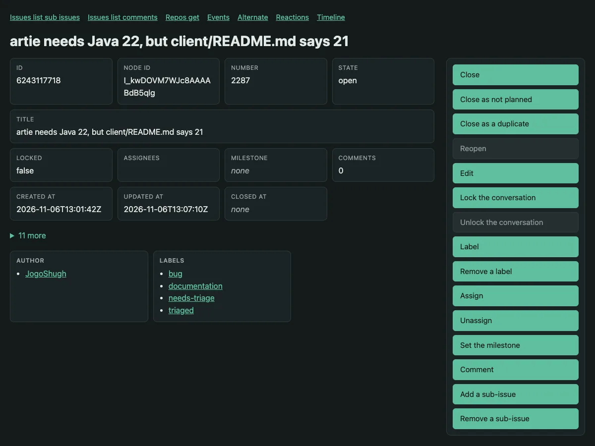
- Walk: 109 s; 11 planner decisions, 7 reasoner choices. Watch #2295, closed once all three were done.
- Kept: the match as has: ${inbox}, a label among the issue's, not the only one; the labelling step marked reasoned, so the model chooses at every issue; the rest pinned.
http://localhost:8392/repos/JogoShugh/heart-github-test/issues/2287/actions/labelRequest body
Answer body
http://localhost:8392/repos/JogoShugh/heart-github-test/issues/2287/actions/labelRequest body
Answer body
triage.heart.yaml, kept from the walk
# Generated by artie generate from runs/triage.trace.yaml, the run of triage.goal.md.
# Every selection as that run made it, nested as it nested; an act it left to the model stays in words.
# What it was offered is pinned in triage.pins.yaml, held to before every act.
# 1 act in the watch calls the model each time one is reached: artie run needs --reasoner.
# artie run triage.heart.yaml owner=JogoShugh repo=heart-github-test --reasoner claude
heart: 1
kind: kept
start: http://localhost:8392/
inputs:
owner:
question: Whose repository?
repo:
question: Which repository?
inbox:
default: needs-triage
question: Which label marks an issue waiting for triage?
done:
default: triaged
question: Which label marks an issue as triaged?
steps:
- act: github:repos-get
fields:
owner: ${owner}
repo: ${repo}
inferred: get repository ${owner}/${repo}
from-intent: In ${owner}/${repo}
then:
- act: github:open-issue
fields:
title: Triage watch
body: Close this issue to stop the triage watch.
intent: Open an issue titled "Triage watch", saying "Close this issue to stop the triage watch."
then:
- keep-as: watch
- watch:
until:
- at: watch
field: state
is: closed
steps:
- act: github:issues-list-for-repo
fields:
owner: ${owner}
repo: ${repo}
state: open
labels: ${inbox}
inferred: List open issues in ${owner}/${repo} filtered by label ${inbox}
from-intent: an issue labelled ${inbox} changes
then:
- whenever:
- has:
- field: github:labels
has: ${inbox}
- leave-where:
say: leave it.
facts:
- field: github:labels
has: ${done}
- intent: Label it bug, question or enhancement, whichever its words say it is.
reasoned: true
- act: github:label
fields:
labels:
- ${done}
intent: Label it ${done}.
then: []
Every step, with every request and answer: the walk · the replay
closeout: each issue closed the way its labels say
A watch over issues labelled ready-to-close: shipped, closed as completed with the release named; wontfix, not planned; duplicate, a duplicate.

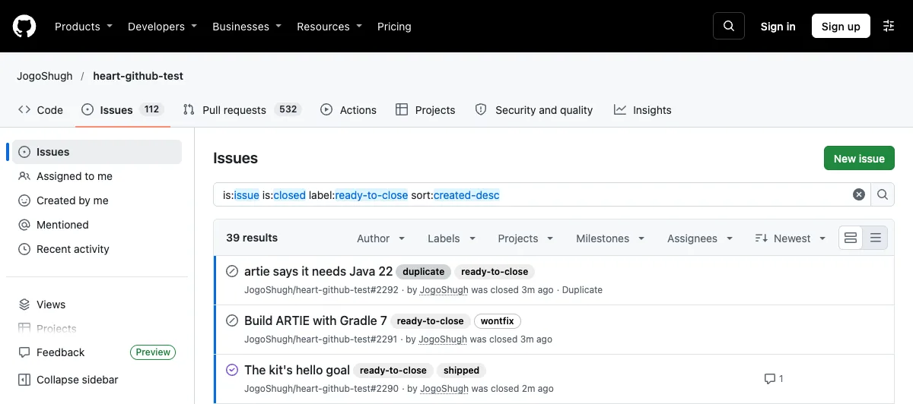

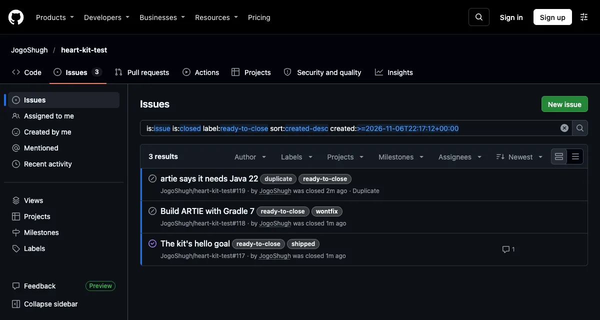

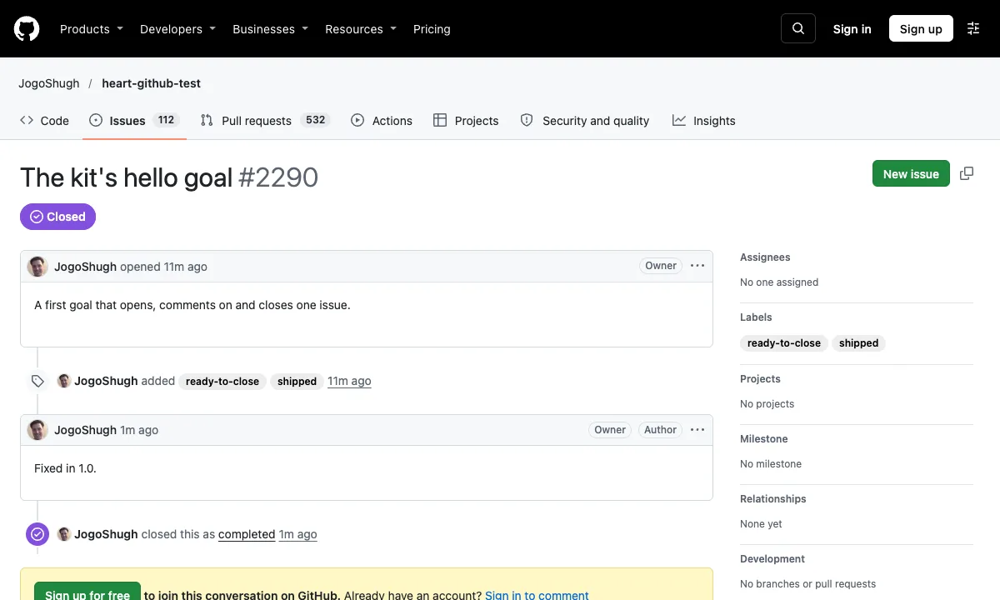

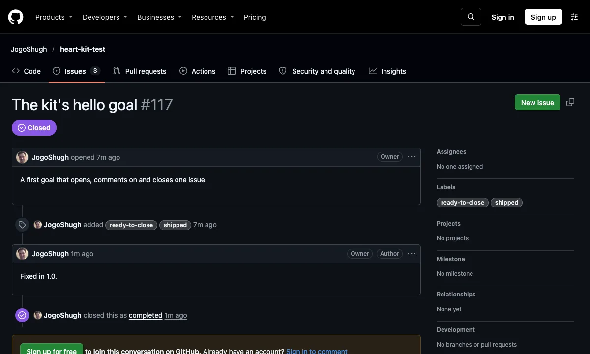

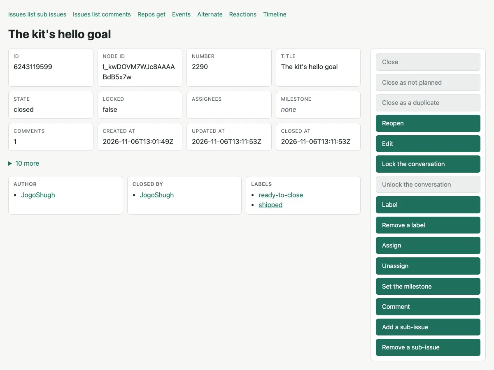

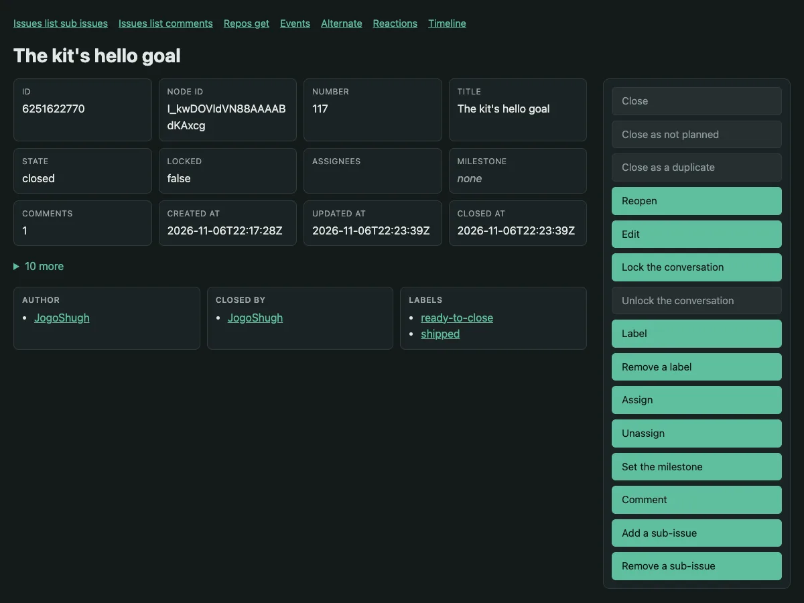

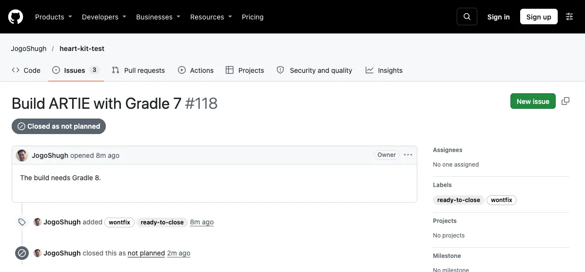

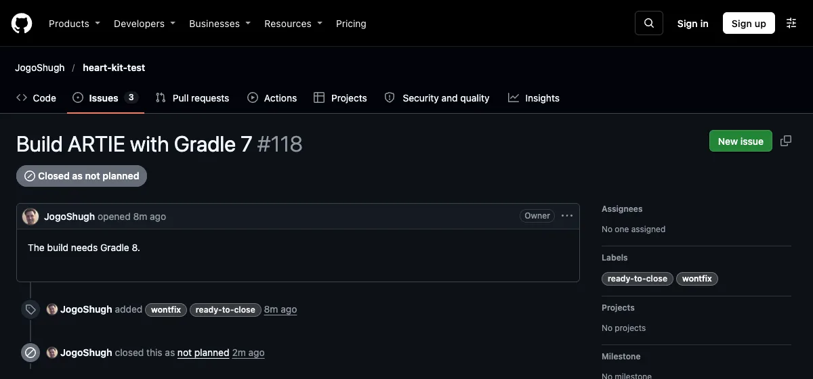

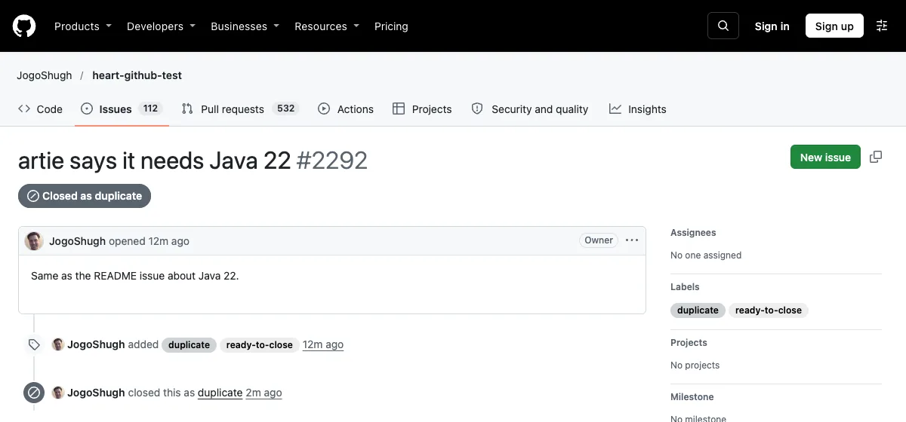

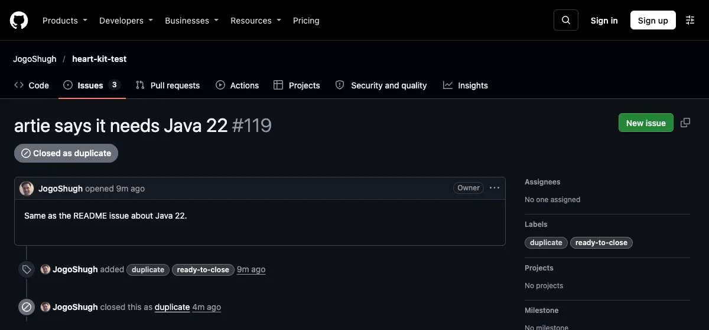
- Walk, version 1.0: 156 s; 22 planner decisions, 7 reasoner choices. Watch #2296.
- Kept: each case a given: on the issue's labels, its close pinned: the replay needs no model.
http://localhost:8392/repos/JogoShugh/heart-github-test/issues/2292/actions/close-duplicateRequest body
Answer body
http://localhost:8392/repos/JogoShugh/heart-github-test/issues/2291/actions/close-not-plannedRequest body
Answer body
http://localhost:8392/repos/JogoShugh/heart-github-test/issues/2290/actions/commentRequest body
Answer body
http://localhost:8392/repos/JogoShugh/heart-github-test/issues/2290/actions/closeRequest body
Answer body
closeout.heart.yaml, kept from the walk
# Generated by artie generate from runs/closeout.trace.yaml, the run of closeout.goal.md.
# Every selection as that run made it, nested as it nested, with no model.
# What it was offered is pinned in closeout.pins.yaml, held to before every act.
# artie run closeout.heart.yaml owner=JogoShugh repo=heart-github-test version=1.0
heart: 1
kind: kept
start: http://localhost:8392/
inputs:
owner:
question: Whose repository?
repo:
question: Which repository?
version:
question: Which release ships the fixes?
label:
default: ready-to-close
question: Which label marks an issue ready to close?
shipped:
default: shipped
question: Which label means its fix shipped?
wontfix:
default: wontfix
question: Which label means it won't be done?
duplicate:
default: duplicate
question: Which label means it repeats another issue?
steps:
- act: github:repos-get
fields:
owner: ${owner}
repo: ${repo}
inferred: get the repository ${owner}/${repo}
from-intent: In ${owner}/${repo}
then:
- act: github:open-issue
fields:
title: Close-out watch
body: Close this issue to stop the watch.
intent: Open an issue titled "Close-out watch", saying "Close this issue to stop the watch."
then:
- keep-as: watch
- watch:
until:
- at: watch
field: state
is: closed
steps:
- act: github:issues-list-for-repo
fields:
owner: ${owner}
repo: ${repo}
labels: ${label}
inferred: list issues for repo ${owner}/${repo} filtered by label ${label}
from-intent: an issue labelled ${label} changes
then:
- whenever:
- has:
- field: github:labels
has: ${label}
- leave-where:
say: leave it.
facts:
- field: state
is: closed
- given:
- field: github:labels
has: ${shipped}
then:
- act: github:comment
fields:
body: Fixed in ${version}.
intent: comment "Fixed in ${version}."
then: []
- given:
- field: github:labels
has: ${shipped}
then:
- act: github:close
intent: close it as completed.
then: []
- given:
- field: github:labels
has: ${wontfix}
then:
- act: github:close-not-planned
intent: close it as not planned.
then: []
- given:
- field: github:labels
has: ${duplicate}
then:
- act: github:close-duplicate
intent: close it as a duplicate.
then: []
Every step, with every request and answer: the walk · the replay
Six more issues, replayed
A second bootstrap; then both kept watches, run again.

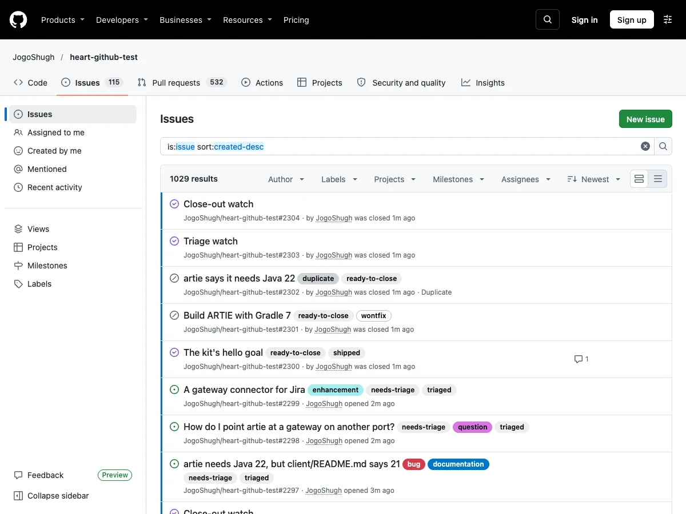

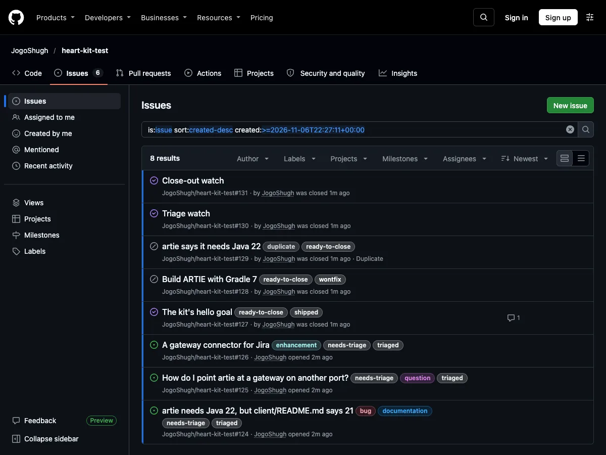
release: three systems, one goal
From one workspace file: a build queued on the build service, the release deployed to staging on the deploy service, the release recorded on GitHub.
Before


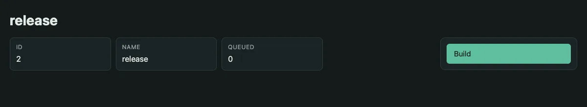


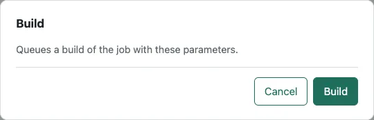

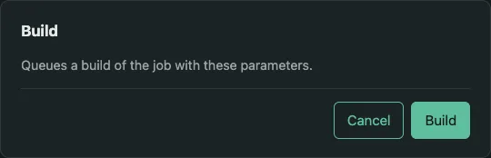

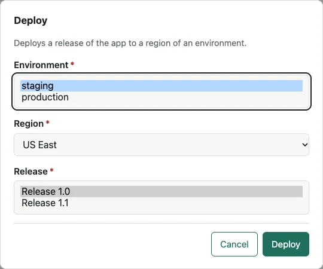

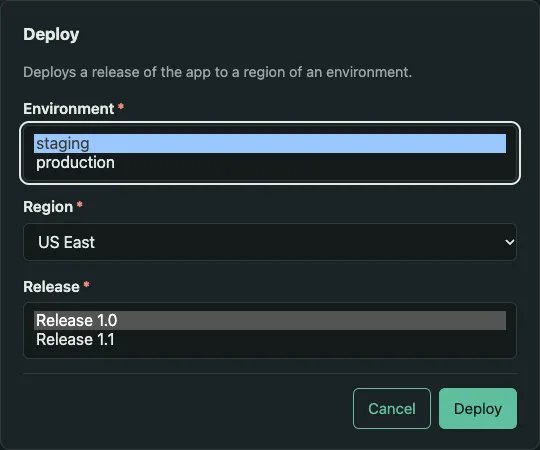
After the walk, version 1.1

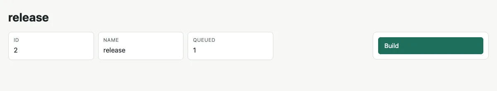

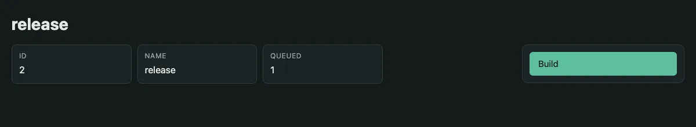

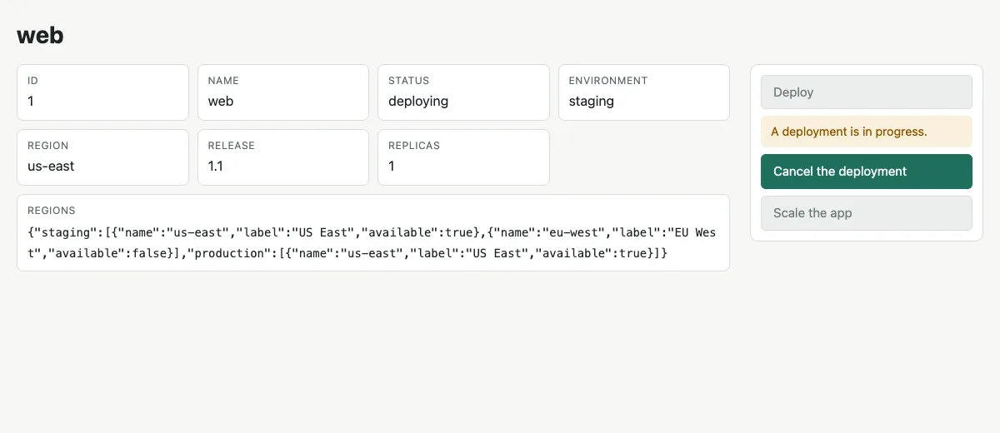

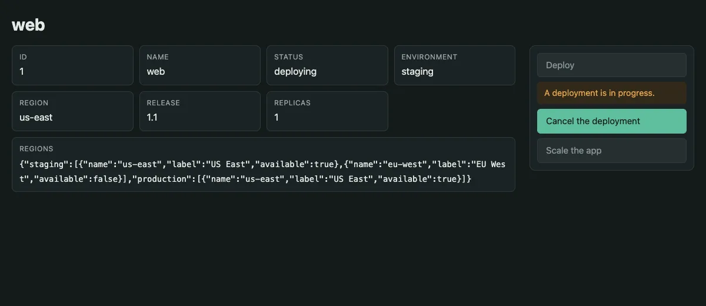

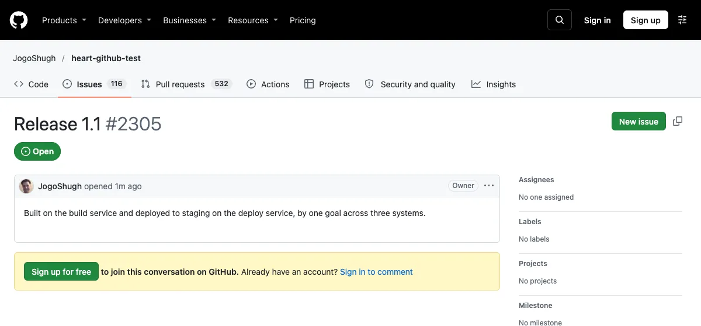

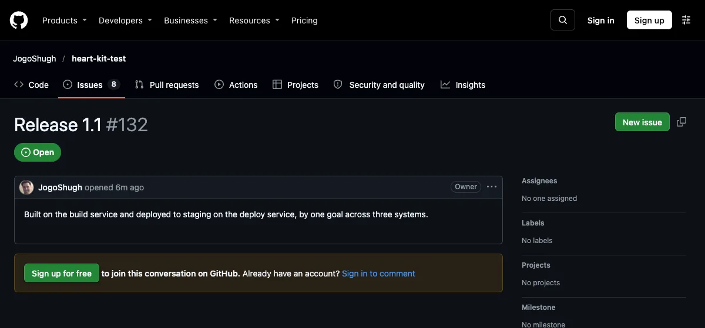
- Walk: 52 s; 15 planner decisions, 7 reasoner choices. Asked first to queue the build with version 1.1, ARTIE refused it before sending: version isn't in the job's form. The planner queued it with none.
- The deploy took its region and release from the choices the form offered, read from the deploy service's own state.
http://localhost:8400/workspace.jsonAnswer body
http://localhost:8401/jobs/release/actions/buildRequest body
Answer body
http://localhost:8402/releases?app=webAnswer body
http://localhost:8402/apps/web/actions/deployRequest body
Answer body
http://localhost:8392/repos/JogoShugh/heart-github-test/actions/open-issueRequest body
Answer body
Replayed, on fresh services
- Version 1.0: 6 s, no model, all three systems: #2306 “Release 1.0”.
- Version 1.2: refused by ARTIE before the deploy, “release: 1.2 is not one of the choices”. The build step before it had already queued a build.


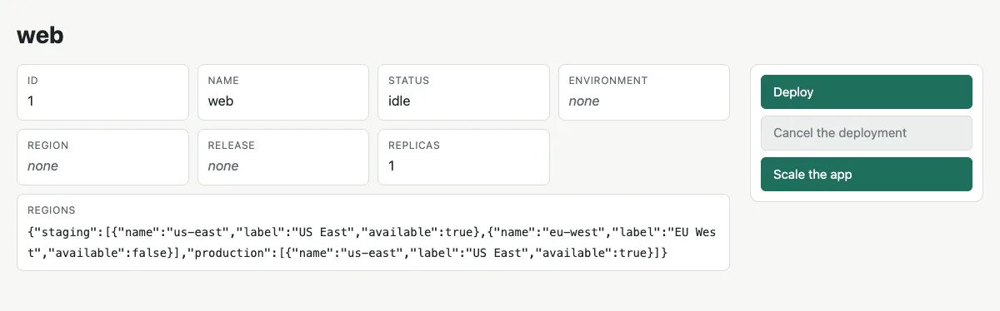

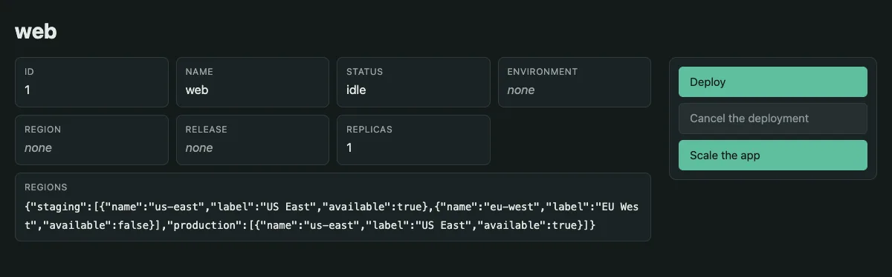
cd:deploy, release 1.2: release: 1.2 is not one of the choices, refused by the client; no request sent.http://localhost:8401/jobs/release/actions/buildRequest body
Answer body
release.heart.yaml, kept from the walk
# Generated by artie generate from runs/release.trace.yaml, the run of release.goal.md.
# Every selection as that run made it, nested as it nested, with no model.
# What it was offered is pinned in release.pins.yaml, held to before every act.
# After an act, what it changed is checked: the run stops where that no longer holds.
# A value marked "review:" holds a value the reasoner chose: check it before keeping the script.
# artie run release.heart.yaml owner=JogoShugh repo=heart-github-test version=1.1
heart: 1
kind: kept
start: http://localhost:8400/workspace.json
inputs:
owner:
question: Whose repository?
repo:
question: Which repository?
version:
default: "1.1"
question: Which release ships?
steps:
- follow: item
title: The release job, on the build service
intent: Follow the link to the release job, on the build service
then:
- act: ci:build
intent: Queue a build of it
then: []
- follow: item
title: The web app, on the deploy service
intent: Follow the link to the web app, on the deploy service
then:
- decide:
steps:
- keep-as: app
- act: cd:deploy
fields:
environment: staging
region: ${app.regions.staging.0.name} # review: step 6 holds it at /regions/staging/0/name, and at /regions/production/0/name too
release: ${version}
intent: Deploy release ${version} to an available region of staging
then:
- check:
- field: status
is: deploying
- field: environment
is: staging
- field: region
is: ${app.regions.staging.0.name}
- field: release
is: ${version}
- follow: item
title: GitHub
intent: Follow the link to GitHub
then:
- act: github:repos-get
fields:
owner: ${owner}
repo: ${repo}
inferred: get repository ${owner}/${repo}
from-intent: In ${owner}/${repo}
then:
- act: github:open-issue
fields:
title: Release ${version}
body: Built on the build service and deployed to staging on the deploy service, by one goal across three systems.
intent: Open an issue titled "Release ${version}", saying "Built on the build service and deployed to staging on the deploy service, by one goal across three systems."
then: []
Every step, with every request and answer: the walk · the 1.2 replay
Every run
| # | Command | Seconds | Model calls | What it did |
|---|---|---|---|---|
| 01 | kit/bootstrap.sh | 16 | 0 | Six issues from the kept seed script: #2287–2292 |
| 02 | try.sh plan hello | 0 | 0 | Read and checked the goal; nothing sent |
| 03 | try.sh walk hello | 49 | 11 + 5 | #2293 opened, commented on, closed as completed |
| 04 | try.sh keep hello | 0 | 0 | hello.heart.yaml; 5 forms pinned |
| 05 | try.sh replay hello | 13 | 0 | #2294, the same, held strictly to the lock file |
| 06 | try.sh walk triage | 109 | 11 + 7 | #2287 bug, #2288 question, #2289 enhancement, each then triaged; watch #2295 |
| 07 | try.sh keep triage | 1 | 0 | triage.heart.yaml: the match as has: ${inbox}; the labelling step reasoned |
| 08 | try.sh walk closeout version=1.0 | 156 | 22 + 7 | #2290 completed, “Fixed in 1.0.”; #2291 not planned; #2292 duplicate; watch #2296 |
| 09 | try.sh keep closeout | 0 | 0 | closeout.heart.yaml: each case a given: on the labels |
| 10 | kit/bootstrap.sh | 22 | 0 | Six more: #2297–2302 |
| 11 | try.sh replay triage | 79 | 0 + 3 | #2297 bug, #2298 question, #2299 enhancement; watch #2303 |
| 12 | try.sh replay closeout version=1.1 | 63 | 0 | #2300 completed, “Fixed in 1.1.”; #2301 not planned; #2302 duplicate; watch #2304 |
| 13 | try.sh plan release | 0 | 0 | Read and checked the goal; nothing sent |
| 14 | try.sh walk release version=1.1 | 52 | 15 + 7 | Build queued; 1.1 deployed to staging, us-east; #2305 “Release 1.1” |
| 15 | try.sh keep release | 1 | 0 | release.heart.yaml, the app kept as app; 1 value to review: the region |
| 16 | try.sh replay release version=1.0 | 6 | 0 | The same three systems, release 1.0; #2306 “Release 1.0” |
| 17 | try.sh replay release version=1.2 | 0 | 0 | Refused before the deploy: “release: 1.2 is not one of the choices” |
- Model calls: the planner's decisions plus the reasoner's choices, counted from each run's trace.
- Runs 01–15 and 17 ran with the kit up; 16 in a kit of its own, as every command does when the kit is down.
- A watch ends when someone closes its issue; the trial's helper closed each once every issue it watched was done.
Known limits
- The release region is read from state. The kept script reads it at
${app.regions.staging.0.name}, whichartie generatemarks for review, not from the deploy form's choices. - A refused step comes after the steps before it. The 1.2 replay queued its build before the deploy was refused.
- The build and deploy services are simulated and held in memory:
kit/try.sh downforgets them.
The kit: kit/. The record: exhibits/kit-trial/, every run's output, trace and kept script.